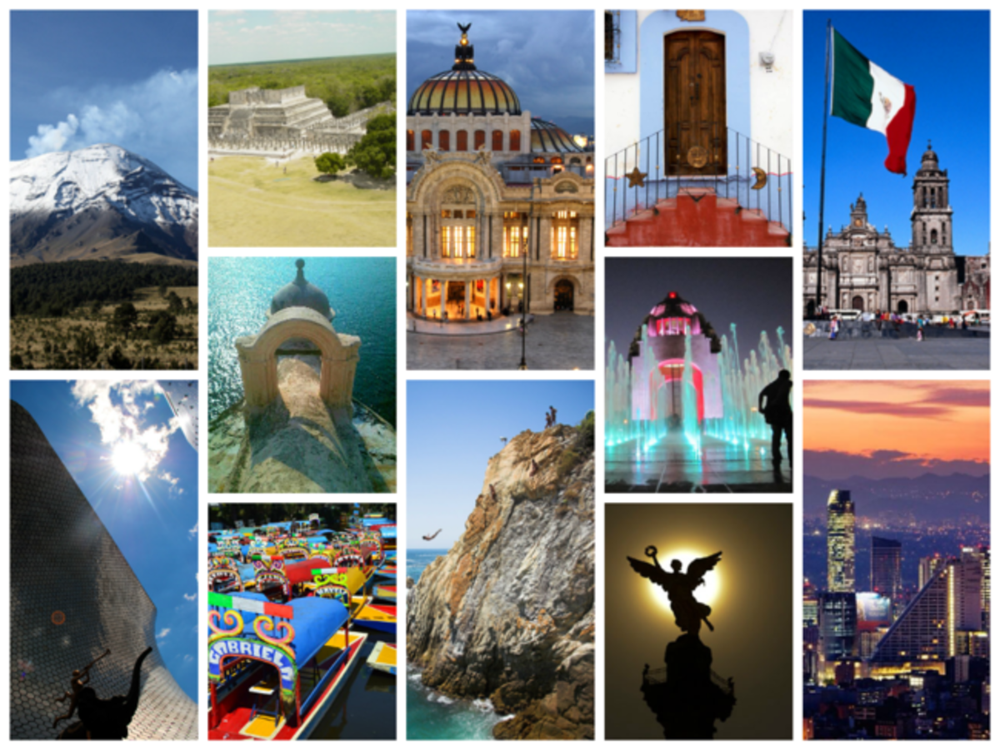
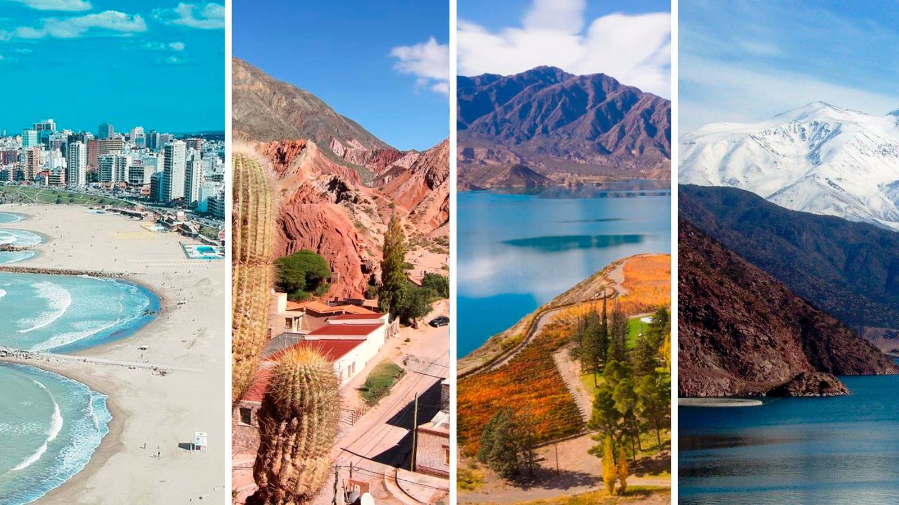
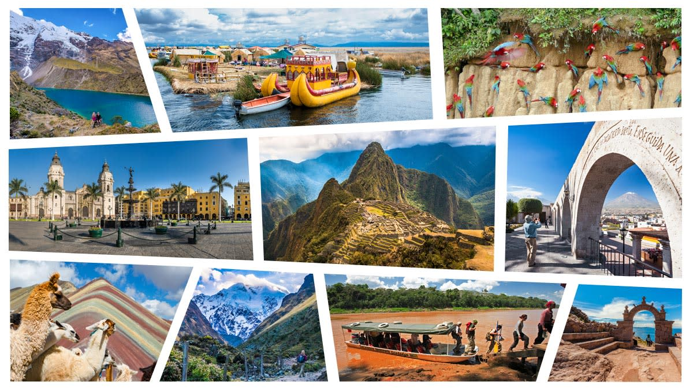
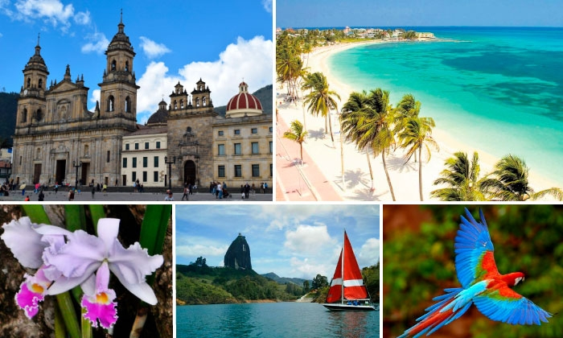

México
🎉 Cultura y tradiciones
“Día de Muertos: una celebración a la vida” Más que una festividad, es una manera única de honrar a los seres queridos con colores, altares y pan de muerto. 🍜 Comida típica
“Más allá de los tacos: 4 platillos que debes probar en Oaxaca” Mole negro, tlayudas, chapulines y mezcal. ¡Oaxaca es un festín para los sentidos! 🖼️ Experiencias de viajeros
“Noche en Xochimilco: entre trajineras y mariachis” Un plan auténtico y lleno de alegría que no encontrarás en una guía tradicional.
“Día de Muertos: una celebración a la vida” Más que una festividad, es una manera única de honrar a los seres queridos con colores, altares y pan de muerto. 🍜 Comida típica
“Más allá de los tacos: 4 platillos que debes probar en Oaxaca” Mole negro, tlayudas, chapulines y mezcal. ¡Oaxaca es un festín para los sentidos! 🖼️ Experiencias de viajeros
“Noche en Xochimilco: entre trajineras y mariachis” Un plan auténtico y lleno de alegría que no encontrarás en una guía tradicional.

Argentina
✈️ Inspiración de destino
“Buenos Aires: la ciudad que nunca deja de bailar” Desde una milonga en San Telmo hasta una caminata por Palermo, el tango está en el aire. 🛍️ Souvenirs recomendados
“Qué traer de Argentina: algo más que mate y alfajores” Incluye vinos de Mendoza, artesanías del norte y libros de escritores icónicos. 🎒 Tips personales
“Cosas que me hubiera gustado saber antes de visitar la Patagonia” Viento fuerte, distancias largas, y paisajes que te dejan sin aliento.
“Buenos Aires: la ciudad que nunca deja de bailar” Desde una milonga en San Telmo hasta una caminata por Palermo, el tango está en el aire. 🛍️ Souvenirs recomendados
“Qué traer de Argentina: algo más que mate y alfajores” Incluye vinos de Mendoza, artesanías del norte y libros de escritores icónicos. 🎒 Tips personales
“Cosas que me hubiera gustado saber antes de visitar la Patagonia” Viento fuerte, distancias largas, y paisajes que te dejan sin aliento.

Perú
🍜 Gastronomía
“De Lima a Cusco: una ruta para comerte el Perú” Ceviche, lomo saltado, ají de gallina y el irresistible pisco sour. ¿Tienes hambre ya? 🧘 Viajes wellness
“Respira hondo: así se siente hacer yoga en el Valle Sagrado” Paisajes que te conectan con la tierra y contigo mismo, rodeado de montañas sagradas. 🖼️ Experiencias de viajeros
“Caminar por Machu Picchu al amanecer: lo que no se ve en Instagram” Sudor, emoción, silencio... y la sensación de estar tocando la historia.
“De Lima a Cusco: una ruta para comerte el Perú” Ceviche, lomo saltado, ají de gallina y el irresistible pisco sour. ¿Tienes hambre ya? 🧘 Viajes wellness
“Respira hondo: así se siente hacer yoga en el Valle Sagrado” Paisajes que te conectan con la tierra y contigo mismo, rodeado de montañas sagradas. 🖼️ Experiencias de viajeros
“Caminar por Machu Picchu al amanecer: lo que no se ve en Instagram” Sudor, emoción, silencio... y la sensación de estar tocando la historia.

Colombia
📸 Lugares instagrameables
“5 fotos que te harán querer visitar Cartagena” Balcones con flores, murales coloridos y atardeceres frente al mar Caribe. 🎉 Eventos y festividades
“Feria de las Flores en Medellín: más que flores, una fiesta de identidad” Desfiles, música y silleteros que muestran el alma paisa con orgullo. 🛍️ Souvenirs recomendados
“¿Qué comprar en Colombia? 6 ideas auténticas y bellas” Mochilas Wayuu, café de origen, esmeraldas o productos artesanales de barro cocido.
“5 fotos que te harán querer visitar Cartagena” Balcones con flores, murales coloridos y atardeceres frente al mar Caribe. 🎉 Eventos y festividades
“Feria de las Flores en Medellín: más que flores, una fiesta de identidad” Desfiles, música y silleteros que muestran el alma paisa con orgullo. 🛍️ Souvenirs recomendados
“¿Qué comprar en Colombia? 6 ideas auténticas y bellas” Mochilas Wayuu, café de origen, esmeraldas o productos artesanales de barro cocido.